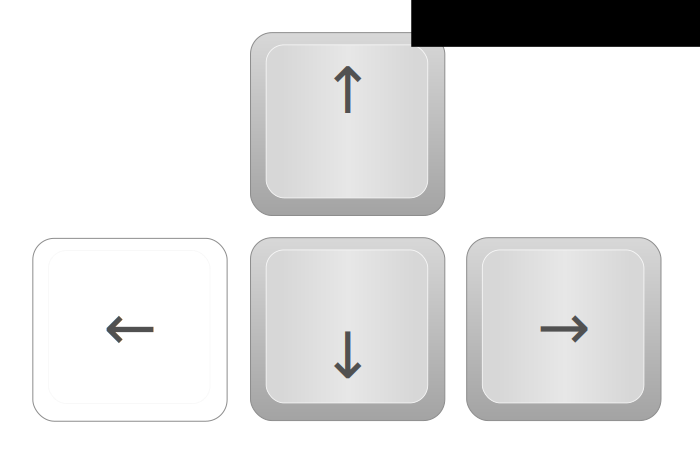
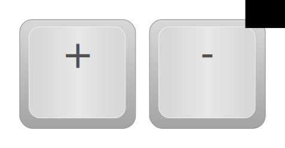
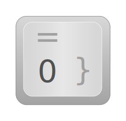
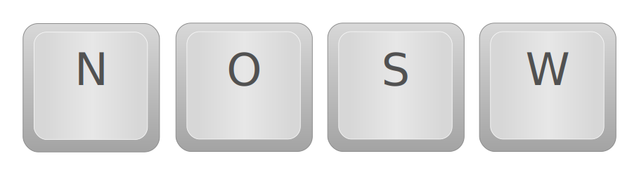
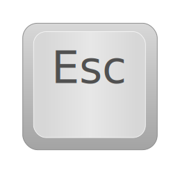

Der Kolkturm ist ein Aussichtspunkt in Halle an der Saale. Der Kolkturm Viewer 360 erlaubt einen virtuellen Rundumblick. Objekte in der Ferne werden erklärt, wenn man mit dem Mauspfeil darüber fährt.
Hinweise zur Bedienung:
| , | + |
Navigieren im Bild über Pfeiltasten oder durch bewegen der Maus bei gedrückter linker Maustaste. |
| , | Im Bild zoomen über Plus-, Minustaste oder Mausrad. | |
|  | Zoomstufe mit der 0-Taste zurücksetzen. | |
|  | Himmelsrichtung automatisch nach Norden, Osten, Süden oder Westen ausrichten über N-, O-, S- bzw. W-Taste. | |
|  | Laufende Animation über Esc-Taste abbrechen. |